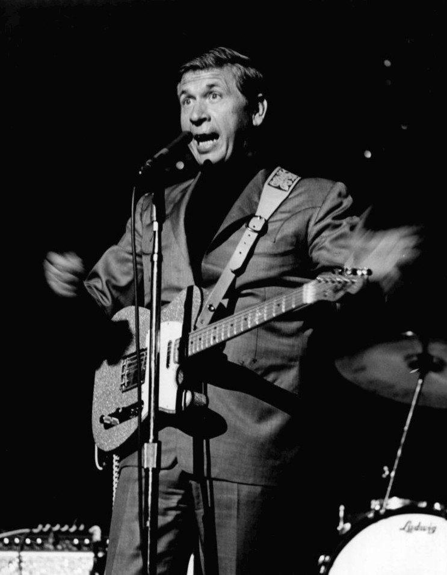

Buckaroo is the 1965 instrumental that gave Buck Owens a No. 1 country hit without a single sung word.
Capitol released it on October 11, 1965, and it also reached No. 60 on the Hot 100.
Bob Morris wrote it, and the Buckaroos, Owens' backing band, carry every bar.

Table of Contents
- What Is Buckaroo?
- The Band Behind the Record
- How High Did It Chart?
- Where Else Has It Been Heard?
- FAQ
What Is Buckaroo?
An Instrumental From a Singing Star
Buckaroo is a 1965 instrumental country single credited to Buck Owens and the Buckaroos.
It was Owens' fourth No. 1 on the country chart in less than a year, Wikipedia notes.
Ken Nelson produced it for Capitol.
The B-side, "If You Want a Love," peaked at No. 24 on the country chart weeks later.
Who Wrote It?
Wikipedia credits Bob Morris as the writer.
A Bob Morris also appears on its list of Buckaroos members, as songwriter and guitarist.
The page does not say outright that the two are the same person.
The Band Behind the Record
The Classic Lineup
Don Rich, Doyle Holly, Tom Brumley, and Willie Cantu were the original Buckaroos of the 1960s, Wikipedia says.
Merle Haggard, who worked briefly with Owens in 1962, suggested the band's name.
By 1964 Brumley had replaced steel player Jay McDonald, Holly had joined on bass, and Cantu had taken the drum stool.
That lineup was in place well before Buckaroo reached the charts.
Rich was Owens' closest friend and the band's leader.
His first turn on lead guitar came on Act Naturally, and Brumley's steel solo defined Together Again.
Our Buck Owens biography tells how the Bakersfield sound grew around them.
Sparkle Guitars and an 11-String Steel
As the hits piled up, Fender gave Rich a champagne sparkle Telecaster and Holly a matching Jazz Bass.
Cantu received a sparkle drum kit from Rodgers.
Brumley got an 11-string pedal steel that let him play Rich's licks during the choruses.
That freed Rich to sing harmony with Owens, according to Wikipedia's Don Rich page.
Band of the Year
The Academy of Country Music named the Buckaroos its band of the year from 1965 through 1968.
In 1966 they became only the second country band to play Carnegie Hall.
How High Did It Chart?
The single reached No. 1 on Billboard's country chart and spent 16 weeks there.
It also crossed over to No. 60 on the Hot 100.
You can place it among the year's other hits in our 1965 music year guide.
| Side | Chart | Peak |
|---|---|---|
| A-side | Billboard country | No. 1 |
| A-side | Billboard Hot 100 | No. 60 |
| "If You Want a Love" (B-side) | Billboard country | No. 24 |
The Billboard chart archive lists Owens' full run of country hits.
Where Else Has It Been Heard?
Covers and Screen Time
The instrumental has outlived its chart run.
Here is where it turned up later:
- The Byrds played it live, and a version is on Live at the Fillmore - February 1969
- Leo Kottke and Danny Barnes have both covered it
- The Buckaroos' recording appears in the 2006 film Idiocracy
Remembering Don Rich
Rich was killed in a motorcycle accident on July 17, 1974, at age 32.
In a late-1990s interview, Owens said Rich "was like a brother, a son, and a best friend."
FAQ
Who wrote Buckaroo?
Bob Morris is credited as the writer.
Ken Nelson produced the Capitol single.
Did it reach number one?
Yes.
It reached the top of Billboard's country chart in 1965 and also climbed to number 60 on the Hot 100.
Does the song have any lyrics?
No.
It is an instrumental, so the band carries the whole record without a vocal.
What was on the other side of the single?
The B-side was "If You Want a Love."
It reached number 24 on the country chart weeks later.
Who has covered the song?
Leo Kottke and Danny Barnes have covered it, and the Byrds played it live in 1969.
A country star stepped aside and let his band take the top of the chart.
The Country 60s hub covers the rest of the sound Owens helped build.
Press play above and hear why Buckaroo still sounds so sharp.